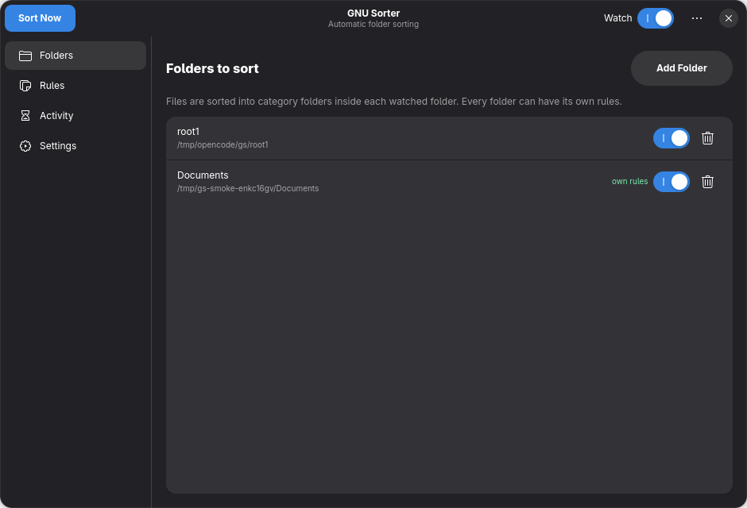
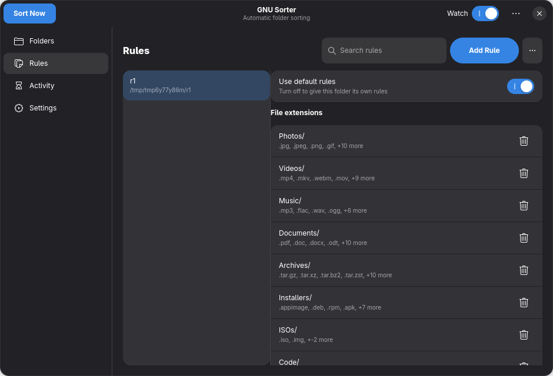

Folders - Manage watched directories

Rules - Split-view editor with per-folder control

Rules - Search, custom badges, advanced section

Activity - History and undo

Settings - Behavior, extras, startup

About - Credits and information